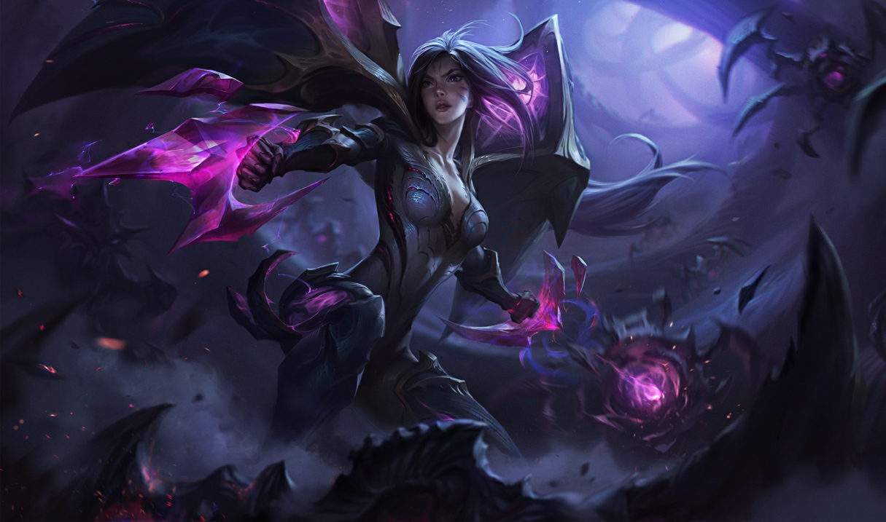

카이사
카이사
카이사, 공허의 딸
Kai’Sa, Daughter of the Void

1. 배경
2. 스킬
2.1. 패시브 - 두 번째 피부(Second Skin)
아군의 이동 불가 효과가 적용된 적 챔피언에게도 플라즈마 1중첩이 쌓입니다.
살아있는 무기 - 카이사의 피부는 카이사의 공격 스타일에 적응해 아이템과 챔피언 레벨 업으로 얻는 영구 능력치를 기반으로 스킬을 진화시킵니다.
2.2. Q - 이케시아 폭우(Icathian Rain)
체력이 35% 이하인 미니언은 200%의 피해를 입습니다.
살아있는 무기 - 진화에 필요한 추가 공격력 100 - 이케시아 폭우가 미사일을 12개 발사합니다.
2.3. W - 공허추적자(Void Seeker)
살아있는 무기 - 진화에 필요한 주문력 100 - 공허추적자가 플라즈마 중첩을 3만큼 적용하며 적 챔피언 적중 시 재사용 대기시간이 77% 감소합니다.
2.4. E - 고속 충전(Supercharger)
기본 공격 시 고속 충전의 재사용 대기시간이 0.5초씩 감소합니다. 공격 속도가 증가할수록 고속 충전의 충전 시간은 짧아지고 이동 속도 증가량은 높아집니다.
살아있는 무기 - 진화에 필요한 공격 속도 100% - 고속 충전을 사용하면 0.5초 동안 투명 상태가 됩니다.
2.4. R - 사냥본능(Killer Instinct)
3. 장점
다양한 방식의 딜링 메커니즘
독보적인 추적/저격 능력
우수한 카이팅과 어그로 해제 능력
높은 성장성과 딜러 라인 척살 능력으로 인한 후반 캐리력
하이브리드 딜링을 기반으로 한 아이템 빌드의 다양성
인파이팅과 포킹이 모두 가능한 스킬셋
4. 단점
수동적인 라인전
짧은 사거리와 순간 후퇴기의 부재
누킹에 치중된 스킬셋, 딜링의 스킬 의존도
성공적인 후진입 성사에 좌우되는 한타 기여도

저작물은 CC BY-NC-SA 2.0 KR에 따라 이용할 수 있습니다. (단, 라이선스가 명시된 일부 문서 및 삽화 제외)